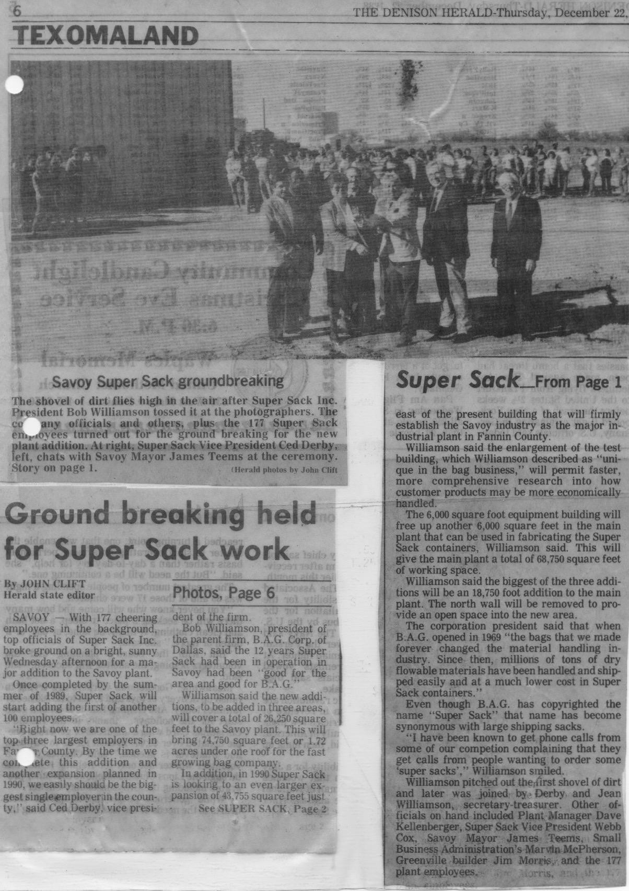
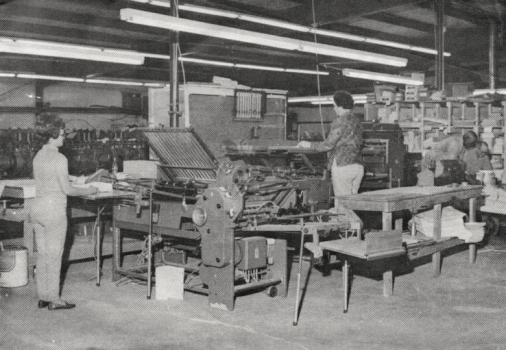

In the late 1960s, the Savoy of the college and the cyclone and the hand press had mostly passed into local legend. The town on Highway 82 was a small agricultural community — the kind of place that was losing population as the century wore on, as farms consolidated and young people left for Dallas or Sherman or Denison, as the economics of the American interior worked their long, slow pressure on the small towns that had grown up along the old railroad lines.
In 1969, Acme Bag Company put a plant in Savoy. Then, in the years that followed, the operation evolved into Super Sack Manufacturing Corporation, making one-ton flexible intermediate bulk containers: the enormous fabric bags used to ship and store industrial quantities of granular or powdery materials. Sand, grain, fertilizer, chemicals, minerals. The bags are ubiquitous in industry worldwide.

Super Sack Manufacturing did not merely survive in Savoy. It thrived. By 1988, when the company broke ground on an expansion of its facility, it employed 177 people in a town whose total population was under 700. That is an extraordinary ratio. In a community of that size, 177 jobs is not a large employer — it is the economic structure of the town. It is what allows the grocery store to stay open and the school district to maintain its enrollment and the people who grew up there to have a reason to stay.
Super Sack's product became so prevalent that competitors' customers began asking for "some super sacks" regardless of brand — the same linguistic fate that had befallen Kleenex and Xerox and Jell-O. A Savoy, Texas company had given an industrial product its generic name. — 1988 groundbreaking coverage
The 1988 newspaper coverage of the groundbreaking is the kind of story that small-town papers do better than anyone else: the specifics of who was there, the numbers, the careful accounting of what this meant for the community. One hundred and seventy-seven employees gathered. The plant was being expanded. The company was growing.
But the detail that has the most staying power is the one about the name. Super Sack Manufacturing made bulk bags well enough, and marketed them widely enough, that the product became synonymous with the category. Competitors' customers started asking for "some super sacks." The name had detached from the manufacturer and attached to the thing itself — the linguistic fate that befalls a handful of products in each generation, the ones that do something so well, so first, so completely that the brand becomes the noun.
Kleenex. Xerox. Band-Aid. Super Sack. That last one from a plant in Savoy, Texas, population under 700, a hundred and sixteen years after a Mississippi-born adventurer donated forty acres of North Texas prairie to a railroad in exchange for the right to give the town his name.
All Tales